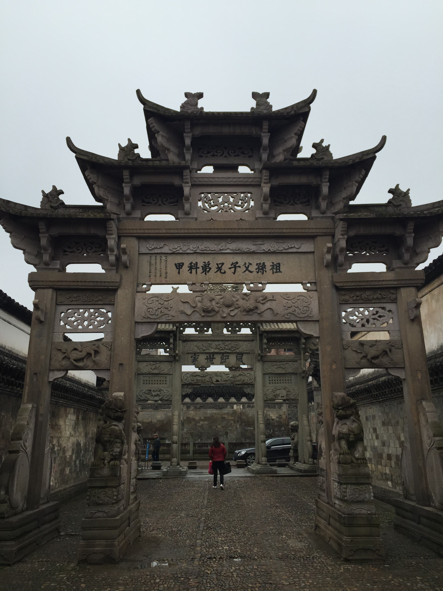
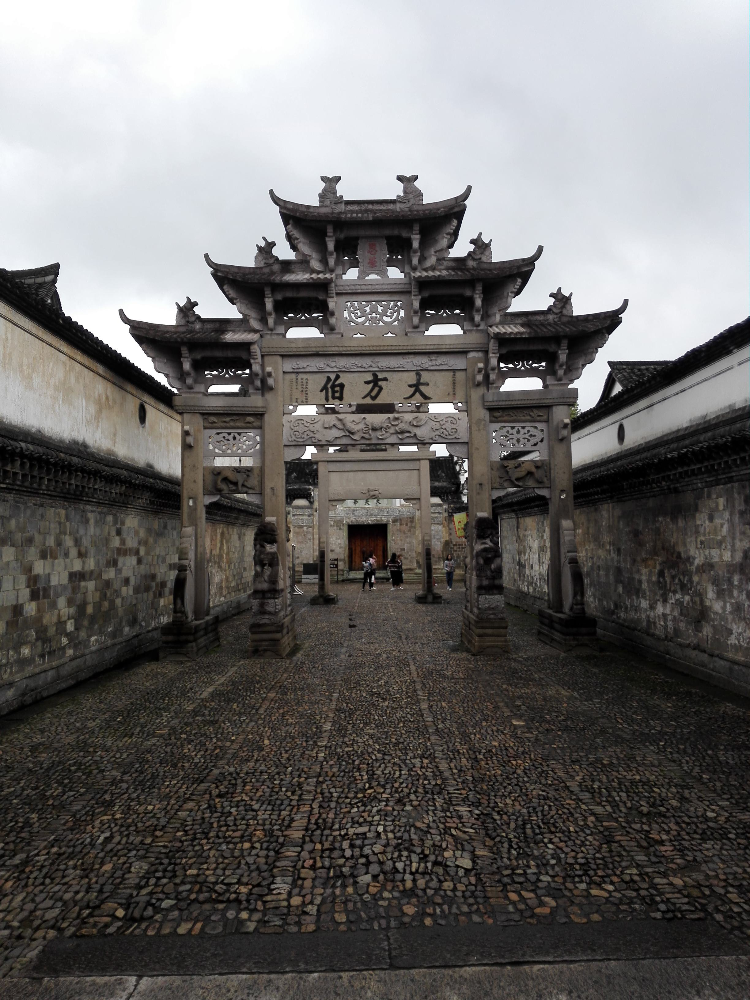
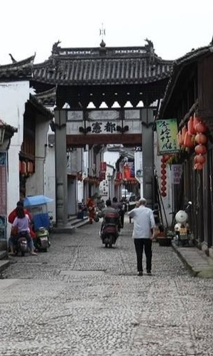
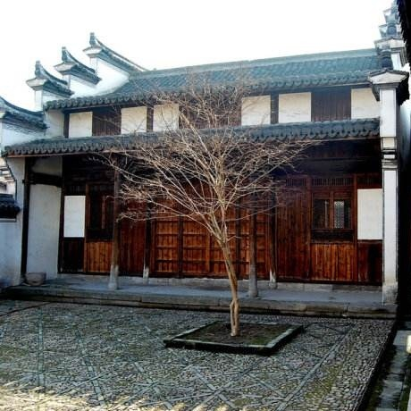

三足鼎立的村落格局

“宅以形式为骨体，以泉水为血脉，以土地为皮肉，以草木为毛发。“卢宅因雅溪而建，面东、西二岘而兴，它是一座融山川形胜与人文风韵于一体的建筑群落。
卢宅聚落的基本格局从明代中叶开始逐步形成，整个聚落建筑与雅溪、东西岘峰及周围山丘脉络紧密结合，因地就势，和谐共存，融为一体。雅溪东河、中河、西河三支流形似玉带，汇南山东岘峰、笔架山之水，自南向北环衬而流，在宅后汇聚，折往西北注入东阳江；卢宅街自县城东门外叱驭桥往东延伸，横贯东西，直至村落东大门还珠亭，东西距三华里。整个村落以卢氏大宗祠为核心，复荆堂、肃雍堂、树德堂三大宗支建筑群三足鼎立，与大宗祠呈拱月之势。
三峰鼎峙，雅溪环绕，大街横贯，一个中心，三足鼎立，形成了完整的村落格局。
幽深肃穆的厅堂宅第

卢宅明清古建筑群是以厅堂为中心组群的典型的府第建筑。卢宅的厅堂建筑轴线分明，主次有序，主要轴线都以“前堂后寝”、“前厅后堂”为格局，功能分区明确，院落重重，幽深肃穆。卢宅厅堂规模宏敞，庭院宽大，建筑用材粗壮，构架独特，雕饰以东阳木雕为主，融石雕、砖雕及彩绘艺术于一体，庄重华丽。
从《雅溪卢氏家乘·宅里图》可见，明清两朝，卢宅建有厅堂达41处，不仅数量众多，而且布局严谨，规整对称，中心突出，形成以房派为核心的区域结构。
卢宅的厅堂等级分明。厅堂建筑布局，规格大小与宗族房脉的强弱往往是一致的，而厅堂的规模形制又取决于房系的大小与典章制度的约束。一般的厅堂轴线由前门楼、中大厅、后堂屋三进组成，基本上按传统礼制“前堂后寝”、“前厅后堂”的格局布置。也有四进、五进、九进的。每幢建筑所存留的历史和民俗信息表明，其规模与格局都与其家庭的政治、文化、经济强盛兴衰密切相关。
卢宅的厅堂宅第在对儒家礼乐思想极度推崇的同时，极显庄重气派。
衔街夹道的门楼牌坊
自明代中叶开始，随着科第赫起，卢宅相继矗立起近三十座木石牌坊，到了上世纪60年代，尚存牌坊25座，坊面27块。惜在文化大革命初期“破四旧”运动中，二十余座牌坊毁于一旦。
卢宅的门楼牌坊，大都立于街口路旁，宅第门前，就其性质而言，可分三类：一类为功德坊，用于褒扬功能、显示官位，彰扬科举成就，其目的既是为光宗耀祖，显耀门庭，也为激励后学。另一类为节烈坊，用于表彰忠臣及孝子，旌表妇女贞节，宣扬忠孝节义。第三类为门楼标志坊，通常建于宅第之前与门墙相结合，既作牌楼又作大门。大量坊衔街夹道，肃然傲踞，既是对卢氏科甲、节义的标榜，又给卢氏子孙创造了激励、奋进的社会氛围。
卢宅牌坊，属柱不出头的庑殿式牌楼，主要为木、石、砖坊、或木石、砖石混合坊，或朴实雄建，或精巧华丽，大多精美绝伦。每座牌坊分别采用了素平、压地隐起、减地平钑、剔地起突、圆雕、透雕、镂雕等手法，雕琢出双狮绣球、麒麟踏宝、八宝如意及龙头鱼尾脊吻等图案，赋予其固定的独特的建造意义。

星罗棋布的园景寺观
昔日卢宅，溪水潺潺，清澈绕舍，流芳宅里，园林台榭幽雅别致，曲径回廊，飞檐环翠。为了满足族人休闲游憩，陶冶性情，祭祀祖宗、宗教信仰的需要，在宅第周围，卢氏族人造亭筑园20余处，如日涉园、金谷园、百果园、芙蓉园、应峰园等。
园林之外，雅溪卢氏另筑有一些独立的亭阁，著名者有还珠亭和日休亭。还珠亭是纪念元代卢氏族人卢岘民拾珠还珠的纪念亭，亭始建于乾隆十四年（1749），光绪十年（1884）重建，为歇山顶周围廊建筑，至今尚存。日休亭在东驮塘北岸，曾是明代卢氏族人卢尧命（字惟钦）的读书处，取古书中“作德心逸日休，作伪心芳日拙”之义为名。
文人墨客对雅溪卢氏居处的山水风光也多有题咏，如《雅溪述德图序》称“雅溪者，东阳多佳山水，而溪总其胜。”《题雅溪述德图》“先生家东阳，结庐面三峰，其下俯雅溪，涵碧岚烟浓。”


幽雅恬静的书院楼阁
雅溪卢氏家族素来尊师重教，书香不绝。他们设家塾，建义学，兴书院，聚姓课读，延师讲习，启蒙授业解惑传道。
卢宅街北，肃雍堂轴线甬道两侧的东、西荷亭书院是其中较为著名的书院，西荷亭书院，又称荷亭别墅，建于明弘治戊午（1498）年，为卢氏族人、江西道监察御史卢格辞官后的读书处。
众多书院和藏书楼的设置，不仅为雅溪卢氏跻身科甲提供了教习场所，而且使卢氏子弟得受儒家文化的熏陶和教育。
人杰地灵的风水宝地
受古代哲学“天人合一”、“万物一体”观念和堪舆理论的影响，雅溪卢氏和东阳居民都非常讲究风水，建房选址、规划、设计、营造，以至开门砌灶，无不请风水先生，以求自然环境与人的生命融为一体，而臻于天时、地利、人和的目的。
东阳居民对于聚落环境的选择，强调审“势”观“气”，讲究山脉、水流、林木的位置、走向、荣枯，讲究藏风纳气；对于居住环境的选择，特别重视相地立基，注重建筑朝向、形式、布局、左邻后舍的关系处理。
卢氏夹雅溪而居。村落中心为卢氏大宗祠，因地势低洼，形似莲花之心。雅溪汇南山之水，分成东河、中河、西河三支，环衬而流，往西北注入东阳江。卢宅西北属虎，为防猛虎欺“卢”，在卢宅西北隅建太祖殿（后为铜佛殿）、观音殿、镇圣殿以示镇压；此外，在雅溪西河建回日桥、太和桥、拱宸桥、延庚桥、桂林桥无座，桥前立块石，暗喻五支弓箭射虎，护卫家宅殿平安。
雅溪环抱之中殿卢氏大宗祠和肃雍堂、树德堂、复荆堂三大宗支宅院，依照“面屏、环水、枕山”殿阳宅理念布局，南以东岘峰、西岘峰为屏。雅溪卢宅一直被视为地灵人杰殿风水宝地，笔架山历来被卢氏族人视为文脉所在，严禁有所遮挡，并借笔架文林之名，启迪教育族内子孙。
独树一帜的经典民居
民居建筑石一方地域文化的物化标志，东阳古民居在江南民居中独树一帜，它承载和见证了东阳千百年的传统和历史。卢宅古民居以其规模宏大，形态独特、时代序列分明、文化底蕴深厚著称，堪为东阳民居的经典之作和杰出代表，它正以特有的魅力向后人展示着中国江南一隅传统文化的华章。
从建筑形态上看，卢宅古民居呈现四大特点：
（一）规模宏大。卢宅的建筑以厅堂为中心，院落重重，庭院深深，平面布局规整宽敞，建筑用材粗壮，单体建筑雄伟宏大。
（二）布局严谨。雅溪卢氏以宗祠为核心，以血缘为纽带，以复荆堂、肃雍堂、树德堂三大宗支为主脉，聚家成族，聚族成村。
（三）构架科学。卢宅厅堂斗拱数量少但结构作用明显。从其构件中可见棱柱、月梁、普拍枋、挑斡等宋代建筑遗风，而且拥有枫拱等形制特殊的牌科，为南方所独有，可与宋代《营造法式》相印证，对于研究木构建筑技术的演变、明清南北建筑制度的差异等方面具有很高等科学价值。
（四）雕饰华丽。卢宅等厅堂宅第雕饰典雅华丽，融东阳木雕、石雕、砖雕及彩绘艺术于一体，其中以木雕艺术最为精湛。
从时代序列看，卢宅现存等古民居，从明代景琴、成化、弘治、正德、万历，到清代的康熙、乾隆、道光、咸丰、光绪、直至民国，一应俱存，充分展现了东阳民居各个历史时期的建筑风格和特色，是东阳地方文化的直接见证和物化标志，犹如东阳古民居博物馆，为社会学、民俗学、建筑学、美学等各个学科的研究，提供了不可多得的实物史料，具有极其珍贵的历史价值。从文化背景看，卢宅厅堂宅第有别于普通的民居，而属典型的士大夫府第建筑。卢宅涵纳的内容，已经远远超出了建筑本身，它以无声的建筑凝聚了雅溪卢氏近千年历史的精华，又融汇了中华民族文化的根本，是一部建筑文化的经典，是一部建筑艺术的教材，是一部建筑规划的范本，更是一部优秀的人文史集，耐读的历史大书。